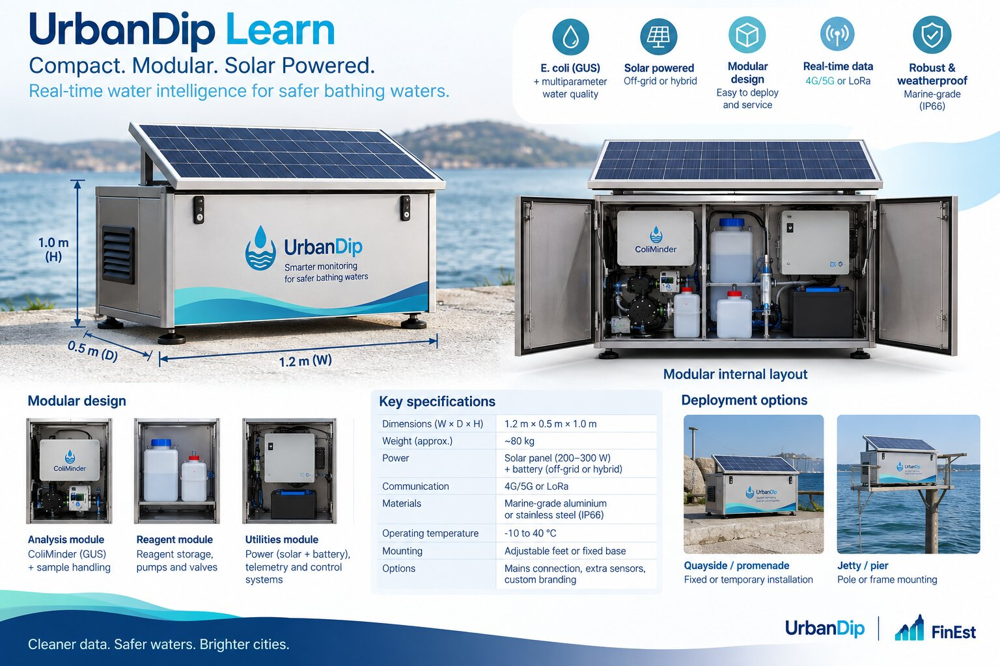

01 / CALIBRATE
UrbanDip Learn
Every water body has its own story.
A temporary reference station combines EXO, TriOS, ColiMinder and automatic sampling with paired laboratory tests. An approximately three-month deployment builds the dataset needed to calibrate a model for your location.
- Continuous water quality measurements
- Paired culture and faecal indicator validation
- A reusable station for the next site
